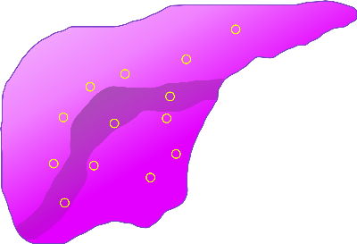
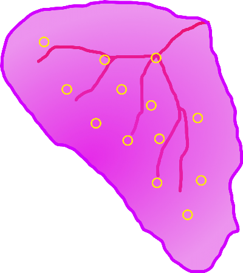
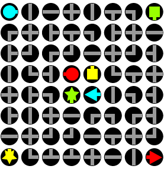
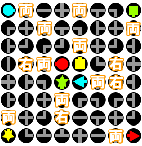
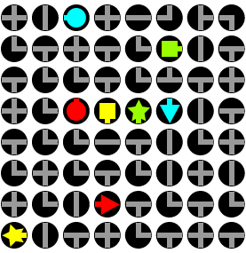
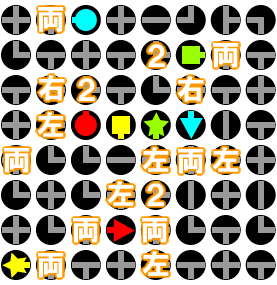
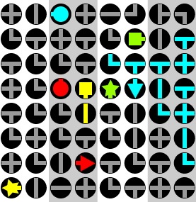
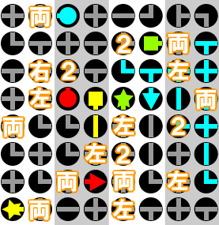

Chapter 5 闇のオペルームDarkness in the O.R.
- 1フェイス・オフ/Face-Off
-
Information
- 80/99
- 5:00:00
Process
- 断裂した靱帯の接合
- 貫通したスティックの除去
Guide
断裂した靭帯をピンセットで繋ぎ、一束4本繋ぎ終えたら縫合することで処置完了となる。一定時間毎に痙攣が起きるが、このときに靭帯にさわると再び断裂してしまうので注意。
全ての靭帯を縫合し終えたらスティックを除去し、刺さっていた部分を縫って手術終了となる。（人工膜をかぶせるのでは無い。）
Special Bonus
条件 倍率 MISS判定無し x1.3 【3分40秒/4分/4分5秒】以上残して手術終了 x1.2 MAX CHAIN【20/30/32】以上 x1.2 痙攣の起きた回数【5/3/2】回以下 x1.3 Operation Rank
ランク Easy Normal Hard C ～2099 ～3299 ～4599 B 2100～2299 3300～3699 4600～4999 A 2300～2399 3700～3949 5000～5299 S 2400～ 3950～ 5300～5499 XS - - 5500～ for XS
靱帯の接合でミスせず、手早く終わらせれば難しくない。マーカスの超執刀を使えば痙攣が発生するまえに終わってしまう。
Movie
 Speedrun 2h49m7s part 7 of 16")
- 2不幸は身近に/Misfortune Strikes
-
Information
- 40/75
- 5:00:00
Process
- 開腹
- 裂傷の処置
- 損傷部の血だまりを処置
- 人口膜を7枚張った状態でゼリーで定着させる
Guide
臓器の損傷箇所から大量に出血しているので、人口膜で塞ぐのが目的。
出血に人口膜をピンセットで運び、全ての膜を貼り終えてからゼリーで定着させれば手術終了となる。
しかし、臓器に存在する裂傷を処置しなければ臓器からの出血が止まらないので、まずは裂傷を処置した後に人口膜に移る。
血だまりは吸い上げた後に一定時間経つと再出血してしまう。さらに人口膜を貼ってる間に心細動が発生すると作業を中断しなくてはいけなくなるので、心細動終了後、出血を一気にドレーンで吸い取り、急いで一気に人口膜を全てに貼ってゼリーを塗ろう。
Special Bonus
条件 倍率 MISS判定無し x1.3 【3分40秒/4分/4分5秒】以上残して手術終了 x1.2 MAX CHAIN【25/30/32】以上 x1.2 剥がれた人口膜の枚数【12/8/3】枚以下 x1.3 Operation Rank
ランク Easy Normal Hard C ～1799 ～2899 ～4299 B 1800～1999 2900～3199 4300～4599 A 2000～2099 3200～3499 4600～4999 S 2100～ 3500～ 5000～5099 XS - - 5100～ for XS
まずは裂傷を縫合。心細動をやり過ごしたら血だまりを吸って一気に膜を張ろう。
Movie
- 3暗転/Fade to Black
-
Information
- 65/90
- 5:00:00
Process
- 内出血の処置
- 損傷部の血だまりを処置
- 人口膜を7枚張った状態でゼリーで定着させる
Guide
前の手術とほぼ同じ内容だが、裂傷ではなく内出血が患部の中にあるので、エコーで探し出してメスで出さなければいけない。全ての内出血を処置し終えたら、以前同様人口膜を張って定着させて終了。
内出血を切り出す際のバイタル減少に気をつけよう。また、出血箇所の血だまりを吸った後に再出血する際バイタルを減らしてくる。心細動の予兆の間はバイタル回復できないので、ある程度高く保っておかないとカウンターショック中にバイタルが0になってしまうことも。
Special Bonus
条件 倍率 MISS判定無し x1.3 【2分30秒/3分/3分10秒】以上残して手術終了 x1.2 MAX CHAIN【40/50/60】以上 x1.2 剥がれた人口膜の枚数【15/10/6】枚以下 x1.3 Operation Rank
ランク Easy Normal Hard C ～2499 ～3799 ～5299 B 2500～2699 3800～4099 5300～5599 A 2700～2799 4100～4499 5600～5899 S 2800～ 4500～ 5900～5999 XS - - 6000～ for XS
このステージの初期から発生している血だまりは、初回に限り、吸い上げた直後に血だまりが再発生してしまう。
そこで、内出血を処置したら、一度血だまりを全て吸い上げて、再び出血するのを待とう。その後、血だまりで埋まったのを確認してから人工膜を貼ろう。
Movie
- 4隷従/Coercion
-
Information
- 75/99
- 5:00:00
Process
- スティグマ「オニュクス」の除去
Guide
スティグマ「オニュクス」との初遭遇。
オニュクスは患部に潜伏し、一定時間経つと表面に出現して5方向に裂傷を生成する。基本的な処置方法としては、エコーで潜伏しているオニュクスを探し出し、メスで浮き上がらせてから血清を注射することでダメージを与えられる。
メスで浮き上がらせても血清の注射が遅いと裂傷を生成してしまうので、素早く行動しなければならない。
2段階ダメージを与えると、潜伏時にダミーを放出するようになる。間違えてダミーにメスを入れると裂傷を生成されてしまう。
ダミーの見分け方
ダミーは3つ目で本体は4つ目である。が、これだけでは広い術野から本物を探し出すのは時間がかかってしまう。
オニュクスの潜伏時には無数のダミーが放出されるが、実はこの中に本体が混じっている。そして、本物だけはダミーより早く移動するので、放出されるダミーの輪の外にいる個体の方向を見よう。その方向に本体が潜伏している。
また、本体の潜伏する方向は放出直前に頭が向いていた方向と同じなので、ダメージ後にのたうちまわるオニュクスの動きをよく見ておこう。
ダミー放出後さらに4段階ダメージを与えればオニュクスは消滅する。
オニュクスの潜伏場所一覧

Special Bonus
条件 倍率 MISS判定無し x1.2 【3分20秒/3分40秒/3分50秒】以上残して手術終了 x1.3 MAX CHAIN【8/12/15】以上 x1.1 オニュクスの攻撃回数【3/2/1】回以下 x1.4 Operation Rank
ランク Easy Normal Hard C ～2299 ～3399 ～4699 B 2300～2499 3400～3799 4700～5099 A 2500～2699 3800～4099 5100～5499 S 2700～ 4100～ 5500～5599 XS - - 5600～ for XS
ミスしなければ自然とXSが出るはず。
Movie
- 5ディア・ハント/No Escape
-
Information
- 65/80
- 5:00:00
Process
- ショットガンの散弾の摘出
Guide
回復薬が使えず、ヒールゼリーの使用可能量が極端に少ない。後先考えずにゼリーを使うとあっという間に無くなってしまうので、節約していく。
摘出痕を処置する際にゼリーで人口膜を定着させる必要があるが、ゼリーの使用量はほんの少しでかまわない。むしろ、手早く処置してバイタルの減少を抑えるようにしよう。
うまくゼリーを節約できれば、最後の消毒までゼリーはなくならないで済む。
Special Bonus
条件 倍率 MISS判定無し x1.3 【2分40秒/3分/3分10秒】以上残して手術終了 x1.2 MAX CHAIN【30/50/60】以上 x1.2 全ての傷痕を人口膜で塞ぐ x1.3 Operation Rank
ランク Easy Normal Hard C ～2899 ～3999 ～5399 B 2900～2999 4000～4299 5400～5599 A 3000～3099 4300～4499 5600～5799 S 3100～ 4500～ 5800～5999 XS - - 6000～ for XS
ゼリーを切らさないように、ボタンをちょん押しで人工膜に塗っていこう。特に難しいステージではない。
Movie
- 6感染変異/Mutation
-
Information
- 70/90
- 5:00:00
Process
- スティグマ「オニュクス」の除去
Guide
基本的な対処法は以前と同じだが、2段階ダメージを与えるとダミーを放出するようになり、さらに2段階ダメージを与えると毛細血管の結界を張るようになる。
結界を張った状態では潜行時にダミーと本物を見分けることが不可能になるので、患部上から4つ目を探すことになる。場所はランダムだが潜伏時に潜伏方向を向いているという性質は変わらないので、目を離さなければ容易に発見できるだろう。
また、結界が張られるとバイタルがどんどん減少してしまうが、回復していたら本体を探すことができない。攻撃を食らわないつもりで挑もう。
オニュクスの潜伏場所一覧

Special Bonus
条件 倍率 MISS判定無し x1.3 【3分20秒/3分40秒/3分45秒】以上残して手術終了 x1.2 MAX CHAIN【8/12/15】以上 x1.2 オニュクスの攻撃回数【3/2/1】回以下 x1.3 Operation Rank
ランク Easy Normal Hard C ～2399 ～3599 ～4599 B 2400～2599 3600～3899 4600～4999 A 2600～2699 3900～3999 5000～5199 S 2700～ 4000～ 5200～5299 XS - - 5300～ for XS
ミスしなければ自然とXSが出るので特に難しくは無い。潜伏時の頭の方向をよく観察しよう。
Movie
 Speedrun 2h49m7s part 8 of 16")
- 7処刑ゲーム/Endgame
-
Information
- 2:00:00
Process
- パズルを解く
Guide
ピンセットでピースを左右に回転し、同色パネル同士がパイプで繋がるようにしていけばよい。解法は以下。
- 「左」は左へ90度回転させることを意味する
- 「右」は右へ90度回転させることを意味する
- 「両」は左右どちらでもいいので90度回転させることを意味する
- 「２」は左右どちらでもいいので180度回転させることを意味する
EASY

解答
NORMAL

解答
HARD
HARDのみ、左右且つ同じ色の背景で隣り合ったピースも回転してしまう。

解答
Special Bonus
条件 倍率 【1分30秒/1分10秒/1分】以上でロック解除 x1.5 ピース操作回数【20/20/18】回以下 x1.5 Operation Rank
ランク Easy Normal Hard C ～119 ～299 ～649 B 120～139 300～349 650～699 A 140～149 350～399 700～749 S 150～ 400～ 750～799 XS - - 800～ for XS
一度でも関係ないパネルを掴んでしまうと操作回数の条件を満たせなくなるので、ゆっくり確実に操作しよう。
Movie
- » Chapter 6